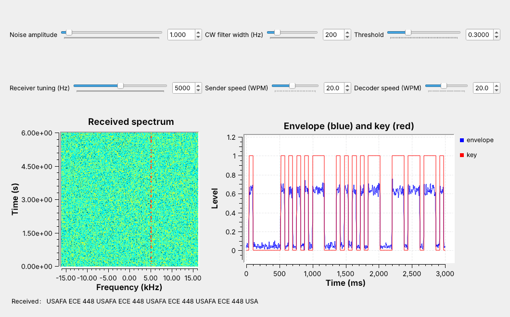
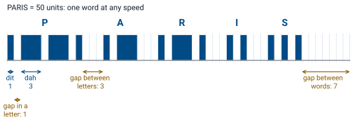
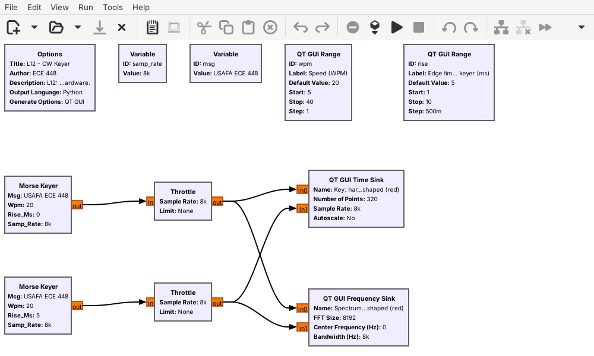
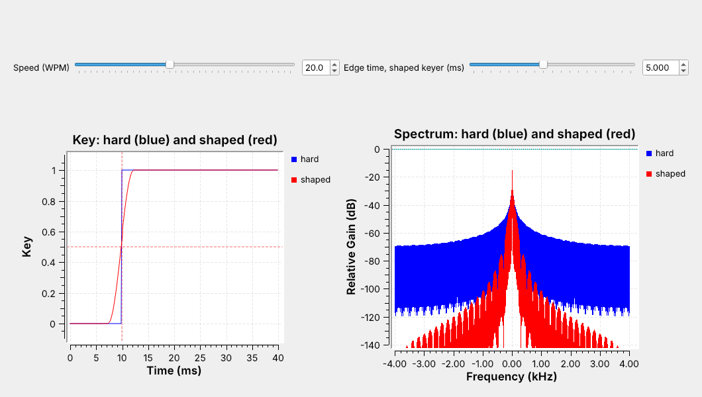
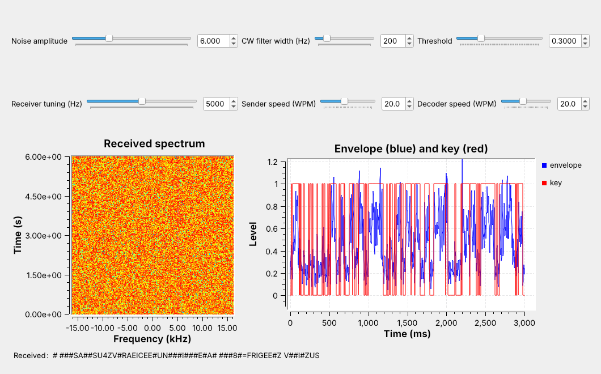
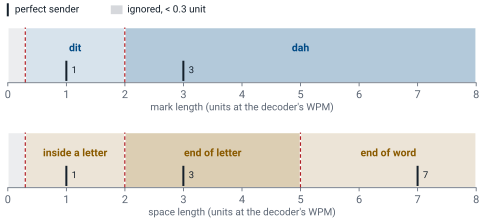
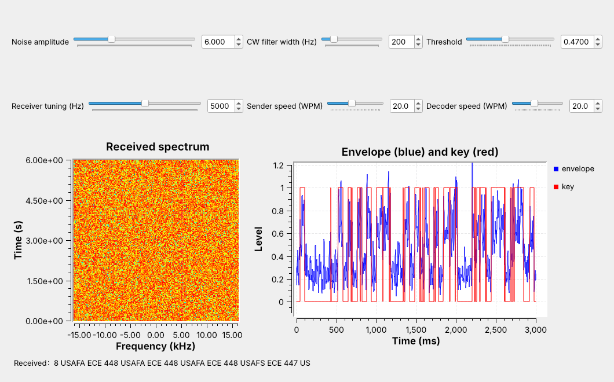
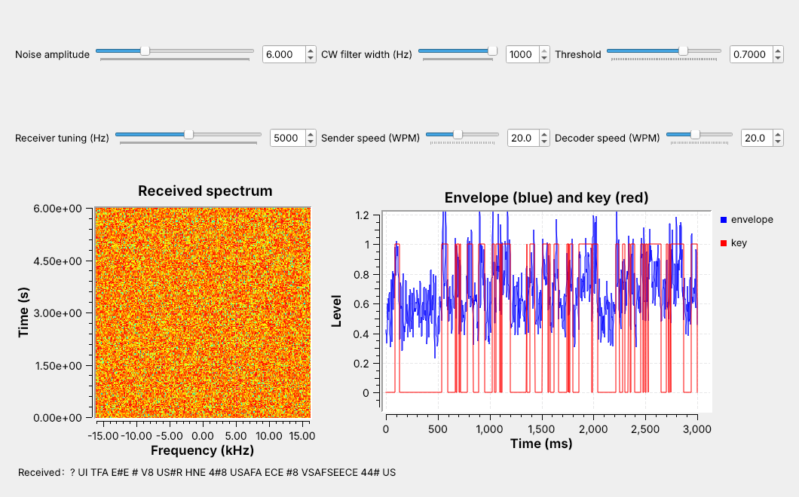

L12 - CW#
CW
Morse code keyed onto a carrier, received through a product detector, and decoded back into text.
Lesson 12 · Module 6: Waveform Applications & RF Reverse Engineering · Dr. Neil Rogers
Slides
Learning Objectives
- I can transmit and receive CW (Morse) using GNU Radio and decode a received CW stream.
Morse Code on an SDR

A carrier switched on and off sends Morse code.
Today we key it, receive it, and decode it in one flowgraph.
The figure is today’s flowgraph, L12-cw-link.grc, running. A keyer turns the line USAFA ECE 448 into Morse code and switches a carrier on and off with it. The carrier sits 5 kHz above the center of a 32 kHz band, and on the waterfall at the left it appears as a broken vertical line: each dash of color is one key-down. The receiver tunes to that carrier, recovers its on-off envelope, the blue trace, and decides from it when the key was down, the red trace. A decoder then turns those marks and spaces back into letters, shown in the Received label.
Lesson 11 showed how to write a custom block. The keyer and the decoder in this flowgraph are two Embedded Python Blocks, and everything between them is standard GNU Radio.
CW and On-Off Keying
CW keys a carrier on for a mark and off for a space.
It is Lesson 6’s AM with a message of 0 and 1.
Its signal is narrow, so it reaches far on little power.
CW, for continuous wave, is the oldest radio modulation still in use. The transmitter keys a carrier on and off: on for a mark, a dot or a dash, and off for a space. In the terms of Lesson 6, it is AM whose message is 0 or 1, so the receiver only has to recover the envelope and decide whether the carrier is there.
Lesson 2 showed that a narrower bandwidth lowers the noise floor, and CW is one of the narrowest signals in use, about 100 Hz wide at ordinary speeds, so a CW receiver can use a narrow filter and copy a weak signal. Amateur operators still use it: most U.S. amateur HF bands set aside their lowest segments, such as 7.000 to 7.125 MHz in the 40 m band, for CW and data, with no voice. Aircraft navigation beacons such as VORs and NDBs still identify themselves with a two- or three-letter Morse code identifier, and pilots check it before they use the beacon.
Morse Timing

A dah lasts three dits.
The key stays up 1 unit inside a letter, 3 between letters, and 7 between words.
Morse code measures everything in one time unit, the length of a dit. A dah lasts 3 units. The key stays up for 1 unit between the marks of one letter, for 3 units between letters, and for 7 units between words. The receiver needs nothing else: it can tell a dit from a dah and a letter gap from a word gap by comparing lengths, without knowing any absolute time.
The figure keys the word PARIS on that grid. Its 14 marks and the gaps between them, including the 7-unit gap that ends the word, add up to exactly 50 units. Operators use PARIS as the standard word for measuring speed, which the next frame turns into a formula.
Words per Minute
A speed of one word per minute (WPM) sends PARIS, 50 units, once a minute, so one unit lasts \(60/50 = 1.2\) s. At \(W\) words per minute the unit, the length of one dit, is
At 20 WPM a dit lasts 60 ms, a dah 180 ms, and PARIS 3.0 s, which is 20 words in a minute.
Speed |
Dit |
Dah |
Gap between words |
|
|---|---|---|---|---|
5 WPM |
240 ms |
720 ms |
1.68 s |
30.2 s |
10 WPM |
120 ms |
360 ms |
0.84 s |
15.1 s |
20 WPM |
60 ms |
180 ms |
0.42 s |
7.56 s |
30 WPM |
40 ms |
120 ms |
0.28 s |
5.04 s |
40 WPM |
30 ms |
90 ms |
0.21 s |
3.78 s |
Our line, USAFA ECE 448, is 126 units long with its final word gap, so the link sends it once every 7.56 s at 20 WPM. A word of real text is not exactly 50 units, since E is 1 unit long and 0 is 19, but PARIS is close to the average word of English text.
The Keyer in GNU Radio

The Morse Keyer turns text into 0s and 1s at the sample rate.
One keyer is hard-keyed; the other shapes each edge over 5 ms.
L12-cw-tx.grc compares two keyers. The Morse Keyer is an Embedded Python Block: it looks up each letter of msg in the Morse table, lays out the marks and gaps on the unit grid at the chosen WPM, and outputs one float per sample, 1 while the key is down and 0 while it is up. Multiplied by a carrier, that stream is the CW signal. Here we look at the stream itself, which is the carrier’s envelope, at 8 kHz.
The top keyer switches between 0 and 1 in one sample, which is hard keying. The bottom one shapes each edge along a raised cosine over the edge time, 5 ms by default, and a slider changes it. A dit at 20 WPM lasts 60 ms, so a 5 ms edge changes its shape only slightly.
Key Clicks

Hard keying spreads energy kilohertz away from the carrier.
Shaped edges keep the energy close to the carrier.
The time sink triggers on each key-down and shows 10 ms before it and 30 ms after. Both traces reach 1 within 5 ms and look almost the same in time, but their spectra differ. The hard-keyed spectrum, in blue, falls slowly on both sides of the carrier and is still above \(-80\) dB at the edges of the plot, 4 kHz away. The shaped spectrum, in red, falls much faster and is below \(-120\) dB beyond about 2 kHz from the carrier.
A receiver tuned to a frequency near a hard-keyed transmitter hears that spread as a click at every edge, and operators call it a key click. Shaping the edges removes the clicks without changing what the receiver decodes, so CW transmitters shape their keying, typically with edges of a few milliseconds.
Drag the edge-time slider while the flowgraph runs and watch the red spectrum: at its lowest setting, 1 ms, it already sits a little below the blue one, and as the edge grows, the skirts fall away from the carrier. The edge has to stay well under a dit, though, or the dits lose their flat tops. At 40 WPM a dit lasts 30 ms, and 5 ms edges still leave 25 ms of it at full power.
CW Keyer Explorer
The left panel shows the whole message as marks and spaces, and below it the first key-down edge enlarged, hard keying in gray and the shaped edge in blue. The right panel shows the spectrum within 1 kHz of the carrier. Start with PARIS at 20 WPM: the readouts give a 60 ms dit and a 3.00 s message. Drag the edge time from 5 ms to 0 and watch the blue spectrum rise until it overlaps the gray one, while the “1 kHz away, vs hard” readout climbs to 0 dB. Then raise the speed: the dits get shorter, the spectrum widens, and the 99% bandwidth readout, the width that holds 99% of the power, grows.
The Receiver

Tune, then a product detector makes a 700 Hz tone.
A narrow CW filter, Abs, and a low-pass recover the envelope.
Threshold and the CW Decoder turn it into text.
The top row of the flowgraph is the transmitter and the channel. The Morse Keyer’s output becomes a complex carrier at 5 kHz, and a Noise Source adds complex Gaussian noise whose amplitude a slider sets. The receiver starts with a Frequency Xlating FIR Filter, as in Lesson 7: it moves the 5 kHz carrier to 0 Hz, keeps ±600 Hz around it, and decimates by 4 to 8 kHz.
The rest of the receiver works at audio rates. The product detector makes the carrier audible as a 700 Hz tone, and an Audio Sink plays it. A band-pass CW filter 200 Hz wide around 700 Hz removes most of the noise. Abs and a low-pass filter recover the envelope, as in Lesson 6, and decimate it to 1 kHz. A Threshold block turns the envelope into a key, 1 or 0, and the CW Decoder turns the key into letters.
Follows: GNU Radio wiki, Frequency Shifting.
The Product Detector
Multiply by a 700 Hz BFO and keep the real part.
The carrier becomes a 700 Hz tone; a tuning error \(\Delta f\) moves it to \(700 + \Delta f\).
After the Xlating filter the carrier sits at 0 Hz, which the ear cannot hear. The receiver multiplies it by a complex tone at 700 Hz, the beat frequency oscillator (BFO), which moves the carrier up to 700 Hz, and Complex To Real keeps the real part. That is the product detector of Lesson 6, used here with an offset so that the output is a tone instead of the envelope. The key-down periods become bursts of a 700 Hz tone, which is the sound most CW operators choose.
A tuning error moves the tone. If the receiver tunes 40 Hz below the carrier, the carrier lands at +40 Hz after the Xlating filter and the tone comes out at 740 Hz. The CW filter is centered on 700 Hz, so the tone has to stay inside it, and a narrower filter leaves less room for a tuning error. The Xlating filter’s ±600 Hz passband also matters here, because it removes a signal 1.4 kHz below the carrier that would otherwise come out at the same 700 Hz.
Envelope and Threshold

The threshold belongs halfway between the space level and the mark level.
Noise raises the space level, so the threshold has to rise with it.
After the low-pass filter, the envelope plot reads about 0.64 during a mark and near the noise level during a space. The Threshold block outputs 1 when the envelope rises above \(1.2 \times\) thr and 0 when it falls below \(0.8 \times\) thr. The gap between the two levels, called hysteresis, keeps a noisy envelope that hovers near the threshold from flipping the key back and forth.
At a noise amplitude of 1 the space level is about 0.04, and thr = 0.3 works. The figure raises the noise to 6. The space level rises to about 0.26, noise peaks cross the fixed threshold, and the decoder reads them as dits. Moving thr to 0.47, halfway between the new space level and the 0.68 mark level, fixes it, as the Noise frame below shows. A real decoder tracks the two levels and moves its threshold automatically; in the lab you set it by eye from the envelope plot.
Decoding Marks and Spaces

A mark under 2 units is a dit, and a longer one is a dah.
Spaces: 2 units end a letter, and 5 end a word.
The CW Decoder measures how long the key stays at each level and converts the length to units at its own WPM setting. Each boundary sits between two values a perfect sender produces: 2 units lies between a 1-unit dit and a 3-unit dah, and between a 1-unit gap inside a letter and a 3-unit gap between letters, and 5 units lies between 3 and 7. When a space reaches 2 units, the decoder looks up the dots and dashes it has collected and adds the letter to the text, or a # if the pattern is not in the table. A change of level that lasts less than 0.3 unit is noise, and the decoder ignores it.
The windows are wide, so the decoder accepts the uneven timing of a human operator. They also let it copy a sender whose speed differs from its own setting, as long as every mark and space still falls in the right window. The L12 Lab measures how far the speed can drift.
Noise

Raise the noise slider and the carrier vanishes from the waterfall.
The CW filter still finds it, and most of the text arrives.
The noise slider sets the amplitude of the complex noise the channel adds across the whole 32 kHz band. At 6, the noise reaches the top of the waterfall’s color scale and hides the carrier there, but the CW filter still separates the carrier from most of the noise, and the envelope stays higher during marks than between them. With the threshold at 0.47, the receiver in the figure copies most of the message. Each wrong letter comes from a mark that noise splits, shortens, or invents: here a dah broke into two dits (A read as S) and another shrank to a dit (8 read as 7). Leave it running and a wrong letter turns up every line or so.
Filter Width

Widen the filter to 1 kHz and much of the text breaks.
Narrow it to 50 Hz and nearly all of it arrives.
A narrower filter needs more accurate tuning.
The figure keeps the noise amplitude at 6 and widens the CW filter to 1 kHz. Five times as much noise reaches the envelope detector, the space level rises to about 0.57, and even with the threshold moved to 0.70, the gap between the two levels is too small for clean decisions. The signal itself is only about 100 Hz wide, so a 1 kHz filter passes mostly noise. Narrowing the filter to 50 Hz goes the other way: at the same noise amplitude, a wrong letter is rare.
A narrow filter has two limits. The tone must stay inside it, so a narrower filter needs more accurate tuning and a more stable transmitter. And the filter’s own response slows the envelope’s edges, which matters only at speeds well above ours: at 40 WPM the 50 Hz filter still copied nearly every letter.
What We Saw
We ran the link headless, without the Throttle, on long runs of random five-letter groups at 20 WPM, and at each setting set the threshold halfway between the measured space and mark levels.
Noise amplitude |
50 Hz filter |
200 Hz filter |
1 kHz filter |
|---|---|---|---|
3 |
clean |
clean |
clean |
4 |
clean |
clean |
an occasional wrong letter |
5 |
clean |
an occasional wrong letter |
a wrong letter every line |
6 |
an occasional wrong letter |
a wrong letter every line |
mostly wrong |
7 |
an occasional wrong letter |
many wrong letters |
mostly wrong |
Every column breaks the same way as the noise rises, and the narrower the filter, the later it breaks. That is Lesson 2’s point: the noise that reaches the detector grows with the bandwidth. The threshold matters as much as the filter. Left at 0.3, the 200 Hz receiver garbled many letters at a noise amplitude of 5 and most of them at 6.
CW on a Real Radio
The L12 Lab sends CW through a PlutoSDR, TX to RX, with a 30 dB attenuator.
Nothing in L12 transmits over the air.
In SDR Flex or GQRX, an RTL-SDR hears a VOR’s Morse identifier in AM.
The L12 Lab moves this link onto a PlutoSDR. The transmit half ends at a PlutoSDR Sink at 915 MHz instead of the Noise Source, and the receive half starts at a PlutoSDR Source, with the same Xlating filter, product detector, CW filter, envelope detector, threshold, and decoder. As in L10, a Rational Resampler raises the 32 kHz stream by 32, to 1.024 MS/s, on the way out and lowers it again on the way in. The received level depends on the cable, the attenuator, and the Pluto’s gain, and at the course’s settings it is thousands of times smaller than in the simulation, so the lab flowgraph adds an AGC after the Xlating filter. It holds the tuned carrier near amplitude 1, which puts the envelope’s mark level back near 0.64 at any attenuation, and the envelope plot shows the threshold as a red line so you can check it sits halfway between the space and mark levels.
In class we transmit only into a cable, into a shielded enclosure, or at very low power in an ISM band, and only when the lesson says to. Nothing in this lesson transmits; the L12 Lab transmits from the Pluto’s TX port through an inline 30 dB attenuator into its own RX port. We have run the PlutoSDR flowgraph only in simulation, with a model of the cable in place of the radio, so the lab is its first run on hardware.
To hear real Morse, open SDR Flex with an RTL-SDR, or GQRX if SDR Flex is not set up, tune a nearby VOR, and choose AM. VORs sit between 108 and 118 MHz; find the frequency of the nearest one on an FAA sectional chart, free at SkyVector, where each VOR’s box lists its frequency and its Morse identifier. Every few seconds the station keys its two- or three-letter identifier as a 1020 Hz tone, and the waterfall shows each mark as a short dash beside the carrier. The CW demodulator in SDR Flex, and GQRX’s CW-U and CW-L modes, work like today’s product detector: they turn a keyed carrier into a tone you can hear. Most amateur CW is on HF, which needs an upconverter or direct sampling; 2 m CW at 144.0 to 144.1 MHz is in range. Listening is receive-only.
Key Point
CW keys a carrier on and off, and a dit lasts \(1.2/W\) s at \(W\) WPM. Shaped edges keep it narrow. A narrow filter rejects the noise, and a threshold midway between the envelope’s two levels recovers the text.
Downloads
L12-cw-tx.grc: a hard-keyed and a shaped Morse keyer side by side, in time and in frequency. No hardware needed.
L12-cw-link.grc: the whole CW link, with sliders for the noise, the CW filter, the threshold, the tuning, and both speeds, a waterfall, the envelope, the audio, and the decoded text. No hardware needed.
Open a .grc file from GRC’s File menu, or run gnuradio-companion L12-cw-link.grc from the radioconda prompt. The Morse Keyer and the CW Decoder are Embedded Python Blocks, saved inside the .grc file; double-click one and choose Open in Editor to read its code. The L12 Lab page has the PlutoSDR version of the link.
Tutorials this lesson follows:
GNU Radio wiki: Embedded Python Block, Frequency Shifting, Low Pass Filter Example, and Runtime Updating Variables.
PySDR: Filters and Noise and dB.
Summary
Idea |
What it is |
Number to remember |
|---|---|---|
CW |
a carrier keyed on and off |
AM with a 0 or 1 message |
Morse timing |
dit 1, dah 3; gaps 1, 3, 7 |
PARIS = 50 units |
Speed |
\(t_\text{dit} = 1.2/W\) s |
60 ms at 20 WPM |
Key clicks |
hard edges spread energy far from the carrier |
shape the edges over a few ms |
Product detector |
multiply by a BFO, keep the real part |
tone at \(700 + \Delta f\) Hz |
CW filter |
band-pass around the tone |
narrower passes less noise, needs closer tuning |
Threshold |
halfway between space and mark levels |
rises with the noise |
Decoder |
marks: 2 units; spaces: 2 and 5 units |
ignores changes under 0.3 unit |
Practice
Looking Ahead
The L12 Lab keys your initials by hand, sweeps the noise, and sends CW through a PlutoSDR.
Lesson 13 decodes DTMF, a signal made of two tones at once.
The L12 Lab is the hands-on version of this lesson. You build a keyer from standard blocks on an empty canvas and see its key clicks, measure how the noise, the filter width, the decoder’s speed, and the tuning limit the link, and then send a message of your own through a PlutoSDR and a cable and decode it.
Lesson 13 turns to DTMF, the tones a telephone keypad sends. Each key sends two tones at once, so where today’s receiver asked whether one tone was present, the DTMF receiver asks which two of eight tones are present.